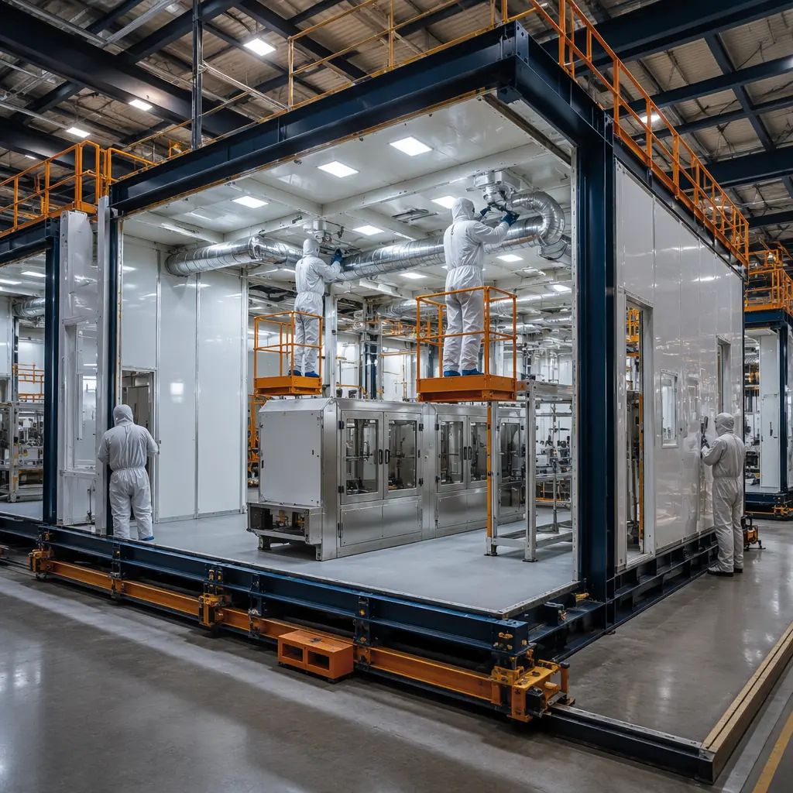
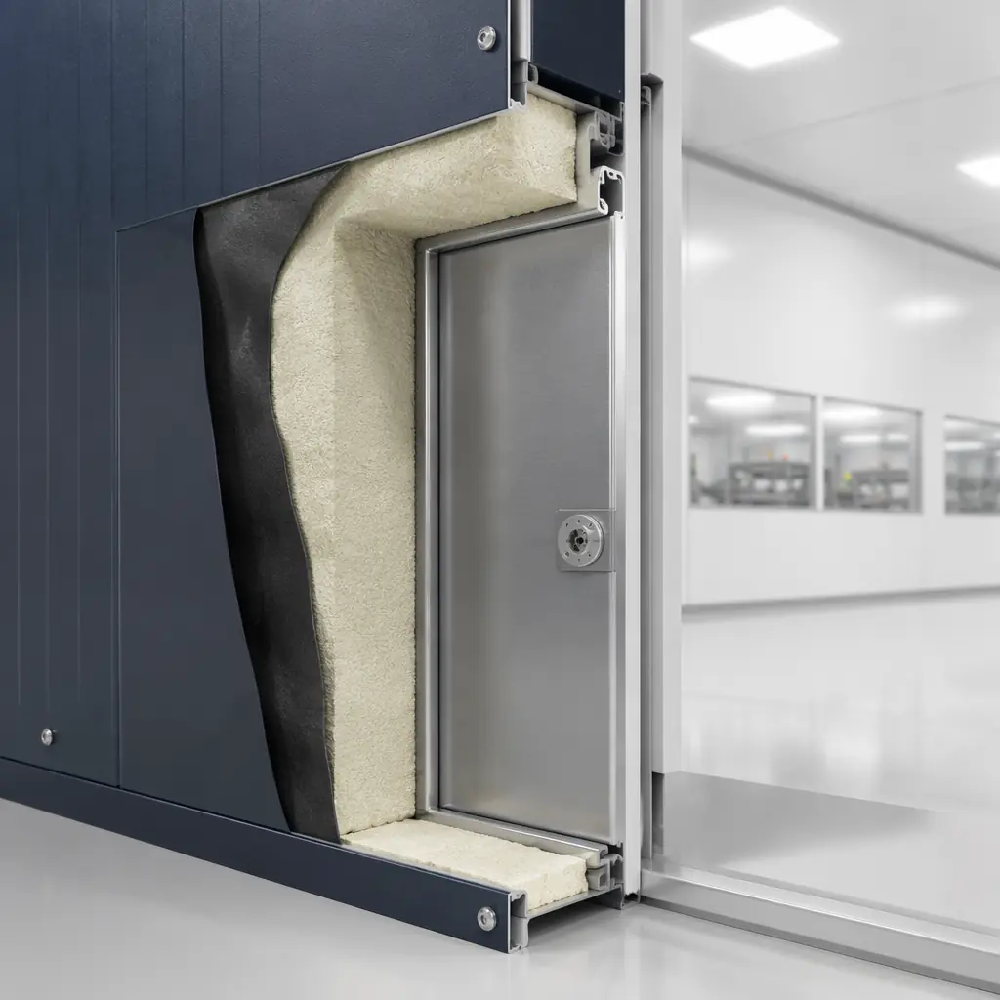
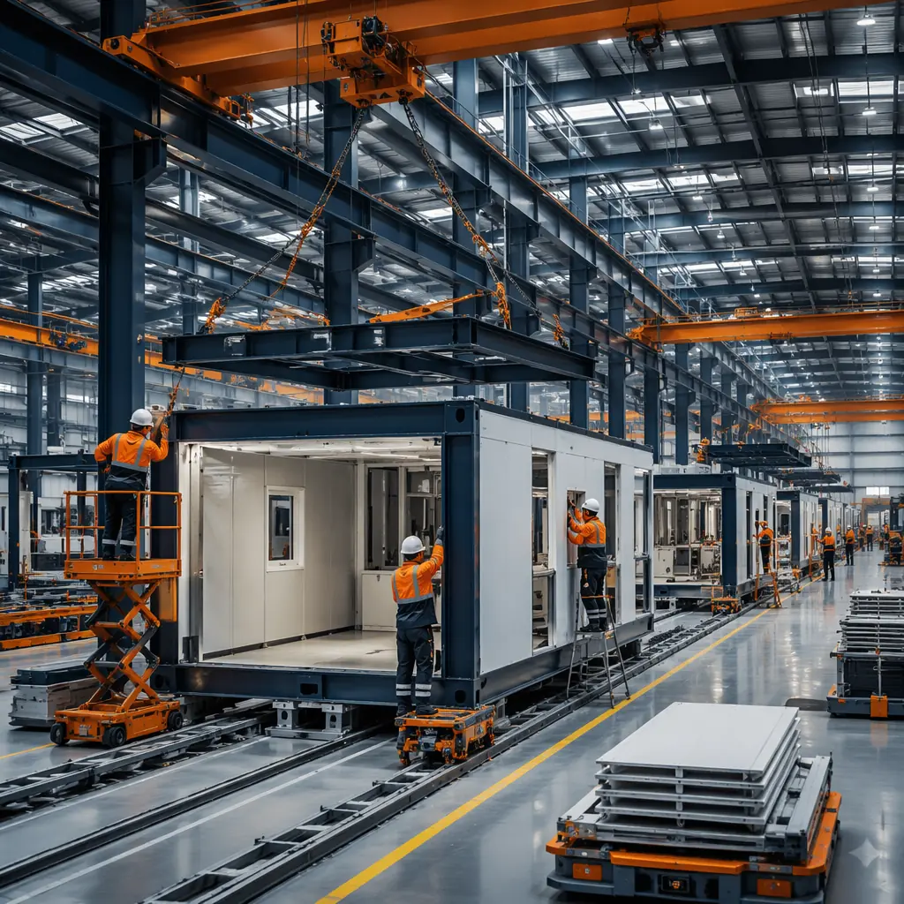
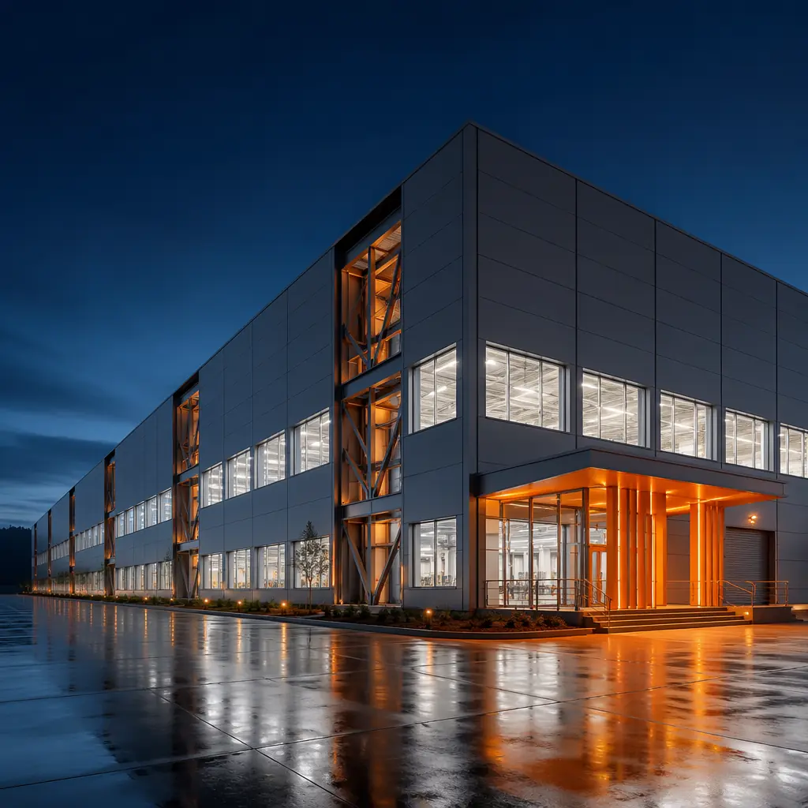

Global lithium-ion battery manufacturing capacity must reach approximately 2,500 GWh by 2030 to meet projected EV demand, according to IEA analysis — yet the current announced pipeline stands at roughly 1,800 GWh, leaving a 700 GWh capacity gap that translates to 25-35 new gigafactories worldwide. A traditional greenfield gigafactory takes 24-36 months from groundbreaking to first cell production, with dry room and clean room construction alone consuming 8-12 months of the critical path. Modular prefabricated gigafactory construction compresses total delivery to 14-20 months by manufacturing process-critical production modules — dry rooms, electrode coating clean rooms, electrolyte filling suites, and formation aging chambers — in controlled factory environments while site work, foundations, and utility infrastructure proceed in parallel. For an automotive OEM or battery manufacturer racing to secure IRA-compliant cell supply, every month of accelerated production represents $80-120 million in revenue from a single 20 GWh line. As evidenced by modular suppliers supporting Northvolt's Skellefteå expansion, CATL's European facilities, and Panasonic's De Soto plant, factory-built production modules are transforming how the battery industry approaches capital project delivery.

The Gigafactory Capacity Gap: Why Construction Speed Is Now a Strategic Imperative
The mismatch between announced production capacity and projected demand is not merely a supply chain statistic — it is a construction throughput problem. The IEA Global EV Outlook 2025 projects that battery demand will reach 2,500+ GWh by 2030 under stated policies, rising to 3,400 GWh in the net-zero scenario. With approximately 1,800 GWh of capacity announced and roughly 1,200 GWh currently operational or under construction, the industry must add 700-1,300 GWh of new manufacturing capacity in under four years. At an average of 20-30 GWh per gigafactory, this represents 25-50 new facilities — a construction volume exceeding $200 billion in capital expenditure.
The battery industry's production capacity gap is fundamentally a construction capacity gap. Modular delivery compresses the gigafactory timeline by 40%, and in a market where every month of delayed cell production costs $80-120 million in foregone revenue, the modular approach shifts the investment thesis from 'can we build it' to 'how fast can we start producing.'
Conventional gigafactory construction follows a linear sequence: site development (4-6 months), structural steel and building envelope (8-12 months), MEP rough-in (6-8 months), dry room and clean room fit-out (8-12 months), and process equipment installation (6-10 months). Weather delays, skilled labor shortages in semiconductor-grade HVAC installation, and the sequential dependency of dry room commissioning on building envelope completion routinely push projects 4-8 months past schedule. Modular construction breaks this dependency chain by manufacturing dry rooms and clean rooms as sealed, pre-commissioned modules that are installed once the structural frame is erected — collapsing the traditional 8-12 month clean/dry room fit-out to 3-5 months of module placement and interconnection. As explored in modular industrial warehouse construction, this parallel production strategy is the defining advantage of modular delivery for large-footprint industrial facilities.

Dry Room Modules: Factory-Built -40°C Dew Point Environments
The dry room is the most technically demanding environment in battery manufacturing — and the single largest source of construction delay in conventional gigafactory projects. Lithium-ion cell assembly requires ambient dew points of -40°C (corresponding to approximately 0.5% relative humidity at 22°C), because moisture contamination above 100 ppm destroys electrolyte chemistry and creates catastrophic cell degradation. Achieving and maintaining -40°C dew point across a 50,000-100,000 sq ft production floor requires a sealed vapor barrier envelope, multi-stage desiccant dehumidification, and precision HVAC control that would be compromised by even minor construction defects.
- Factory-sealed envelope integrity: Modular dry rooms are constructed as fully welded steel cassette panels with continuous butyl rubber vapor barrier membranes, factory-tested to ASTM E779 air leakage rates below 0.25 cfm/ft² at 75 Pa — versus 0.40-0.60 cfm/ft² typical for field-assembled panel systems. Every panel seam is factory-inspected via tracer gas detection (helium mass spectrometer, sensitivity 1×10⁻⁹ cc/sec), eliminating the pinhole leaks that plague field-sealed dry room envelopes and add 2-4 weeks of post-construction troubleshooting.
- Integrated desiccant dehumidification: Each dry room module arrives with pre-installed and factory-commissioned desiccant rotor dehumidifiers (typically 15,000-25,000 CFM capacity, lithium chloride or silica gel media, 250-400 kg/hr moisture removal at design conditions). The dehumidification loop — pre-cooling coil → desiccant rotor → post-cooling coil → supply fan — is factory-balanced and tested to deliver -45°C dew point supply air at the module boundary. Site work is limited to connecting chilled water (6°C supply, 12°C return), regeneration heat (hot water or steam at 120-140°C), and three-phase power.
- Pre-commissioned cascade airlocks: Personnel and material airlock modules (3-stage cascade: ambient → -10°C dew point → -30°C dew point → -40°C dew point) are delivered as integrated assemblies with interlocked door controls, pressure cascade dampers, and 30-second dwell timers. Factory commissioning includes dew point mapping at 50+ sensor locations with ±0.5°C accuracy, generating a complete qualification report that satisfies customer FAT requirements before the module leaves the factory.
- Structural floor integration: Dry room modules span 40-60 ft clear with 25-35 ft ceiling heights — accommodating electrode slitting, winding, and stacking equipment up to 45 ft in length. Floor cassettes are factory-poured with 8-inch reinforced concrete slabs achieving 2,500+ kg/m² live load capacity for electrode coating lines (a typical coating line with dryer section imposes 2,200-2,800 kg/m² at equipment anchor points). Floor flatness is factory-controlled to ASTM E1155 FF50/FL35 — the specification required for automated guided vehicle (AGV) material handling systems operating on 1mm lithium foil transport.
The economic impact of dry room schedule compression is substantial. A conventional 60,000 sq ft dry room costs approximately $55-75 million in construction ($900-1,200/sq ft) and takes 10-14 months from building shell completion to production readiness. A modular equivalent costs $38-50 million ($600-800/sq ft) and reaches production readiness in 5-7 months from module delivery — a 30-35% cost reduction and 50% schedule compression. These savings align with the cost-per-square-foot analysis in our modular construction cost per square foot guide, where the highest-value modular applications consistently occur in technically demanding, schedule-critical environments.

Clean Room Modules: ISO 7-8 Environments for Electrode Manufacturing
Electrode coating and calendering operations require ISO 7 (Class 10,000) clean room conditions, while cell assembly environments demand ISO 8 (Class 100,000) with localized ISO 7 zones at winding and stacking stations. Particle contamination above 25 µm in the electrode coating process creates micro-shorts that reduce cell yield by 3-8% — a yield loss that, at gigafactory production volumes, translates to $15-40 million annually in scrapped cells. Modular clean room construction addresses particle control through factory-integrated HVAC filtration and surface finishes that are tested before reaching the site:
- Factory-certified ISO classification: Clean room modules are factory-tested to ISO 14644-1 standards, with particle counts verified at 0.3 µm, 0.5 µm, 1.0 µm, and 5.0 µm using calibrated laser particle counters. Each module ships with a complete certification report — including air change rates (60-90 ACH for ISO 7, 20-40 ACH for ISO 8), HEPA/ULPA filter integrity testing (≥99.99% at 0.3 µm for H14 filters), and room pressurization differentials (+15 Pa cascade from clean to less-clean zones). This eliminates the 3-5 weeks of post-construction certification testing that conventional clean rooms require.
- Factory-applied clean room finishes: Wall panels use factory-installed fiberglass-reinforced plastic (FRP) or high-pressure laminate with flush, sealed joints — achieving surface roughness below 0.5 µm Ra compared to 2.0-3.0 µm Ra for site-applied epoxy coatings. Factory-installed monolithic epoxy flooring (4-6 mm thickness, cove base to 150 mm height, electrostatic dissipative properties of 1×10⁶ to 1×10⁹ Ω per ANSI/ESD S20.20) is cured under controlled temperature and humidity, eliminating the 7-10 day cure delay that field-applied flooring imposes on the construction schedule.
- Integrated FFU ceiling plenum: Fan filter unit (FFU) ceiling grids — typically 2×4 ft units with EC motor-driven backward-curved fans delivering 800-1,200 CFM each at 0.50-0.75 in. w.g. external static pressure — are factory-assembled as modular ceiling cassettes. Each cassette includes ducted return air pathways, lighting (1,000 lux at work surface, 4000K CCT, UGR < 19), fire sprinklers, and gas detection sensor mounting points. Site installation of a 20,000 sq ft ceiling grid is reduced from 4-5 weeks of overhead work at height to 5-7 days of cassette placement and electrical connection.
The clean room construction approach documented for semiconductor fabs applies directly to battery manufacturing — both require ISO-classified environments, ultra-low particle counts, and precision temperature/humidity control. Our detailed coverage of modular clean room construction for semiconductor facilities addresses the common technical foundation across these industries, including the factory-integrated MEP systems critical for both applications.

Process MEP: Factory-Installed Utility Systems for Cell Production Lines
A single 20 GWh battery cell production line consumes utilities at an industrial scale that rivals semiconductor fabs and exceeds most pharmaceutical plants. The process utility infrastructure — nitrogen generation, argon distribution, deionized water, compressed dry air, and solvent exhaust — represents 25-35% of total gigafactory construction cost and is the most schedule-sensitive MEP scope. Modular construction installs these systems at the factory, compressing field installation by 60-70%:
- Nitrogen (N₂) distribution: Electrode drying ovens consume 500-800 Nm³/hr of nitrogen per coating line at 99.999% purity (Grade 5.0, ≤3 ppm O₂, ≤3 ppm H₂O). Modular MEP risers include factory-welded 316L stainless steel tubing (orbitally welded, 100% borescope-inspected, helium leak-tested to 1×10⁻⁸ cc/sec), pre-installed mass flow controllers, and oxygen analyzers at point-of-use drops — eliminating 800-1,200 field weld joints per production line. Each welded joint eliminated removes a potential contamination source that could compromise an entire electrolyte batch worth $400,000-800,000.
- Argon supply for cell assembly: Laser welding stations in cell assembly require argon shielding gas at 30-50 L/min per welding head, with 40-60 heads active per assembly line. Prefabricated argon distribution skids (copper tubing, brazed joints per AWS B2.2, pressure-tested to 1.5× MAWP) are installed as plug-and-play modules with factory-calibrated pressure regulators and flow meters, reducing field installation from 4-6 weeks to 5-7 days.
- Deionized (DI) water systems: Electrode slurry mixing consumes 8-12 m³/hr of DI water at 18.2 MΩ·cm resistivity (ASTM Type I). Modular DI water skids include pre-installed reverse osmosis membranes, electrodeionization (EDI) stacks, UV sterilization (185 nm + 254 nm), and 0.1 µm final filtration — all pre-piped on a common stainless steel frame with factory-verified resistivity at every sample point. Site connection requires only feed water supply, reject drain, and three distribution loop connections.
- 30+ MW electrical service per line: Electrode coating dryers (3-5 MW each), formation cycling (~1 MW per channel, 200-400 channels per gigafactory), and HVAC for dry/clean rooms (2-4 MW) combine for 25-40 MW connected load per production line. Modular electrical rooms — factory-built ISO containers or custom steel modules with main switchgear (typically 15 kV primary, 480V secondary), dry-type transformers (2,500-3,750 kVA), and motor control centers (MCCs) — are pre-commissioned with primary injection testing, relay calibration, and arc flash studies completed before shipment. This approach, detailed in our modular MEP systems integration guide, compresses electrical room construction from 12-16 weeks to 2-3 weeks of module placement and interconnection.
- Solvent exhaust and VOC abatement: NMP (N-methyl-2-pyrrolidone) solvent recovery from electrode coating requires 30,000-50,000 CFM exhaust with ≥99.5% capture efficiency. Factory-installed stainless steel ductwork (316L, continuously welded, 10% radiographic inspection of seam welds) with integrated regenerative thermal oxidizers (RTOs, 95-98% destruction efficiency at 850°C) arrives as pre-tested modules, eliminating 6-8 weeks of field duct fabrication and RTO assembly.
The factory-installed MEP approach is particularly valuable for gigafactory projects because process utility systems must be commissioned and validated before production equipment can begin qualification — making MEP schedule compression a direct multiplier on time-to-revenue. As demonstrated in our modular construction ROI analysis for developers, the net present value of schedule acceleration in capital-intensive manufacturing facilities frequently exceeds the direct construction cost savings by a factor of 2-4×.
Safety-Critical Design: Explosion-Proof Zones and Gas Detection for Electrolyte Operations
Electrolyte filling is the most hazardous operation in battery manufacturing. LiPF₆-based electrolytes use carbonate solvents (ethylene carbonate, dimethyl carbonate, ethyl methyl carbonate) with flash points as low as 18°C (dimethyl carbonate), classifying electrolyte filling areas as Class I Division 2 hazardous locations under NEC Article 500 and IEC 60079-10-1 Zone 2. Modular construction addresses these requirements through factory-installed safety systems that are commissioned under controlled conditions:
- Factory-installed explosion-proof electrical: All lighting fixtures (Class I Div 2, UL 844 listed), receptacle outlets (interlocked, dead-front design), conduit seals (Chico A compound, factory-poured and pressure-tested to 25 psi per NEC 501.15(C)), and junction boxes in the classified envelope are installed at the factory with complete documentation — seal pour date, technician ID, compound batch number, and pressure test result for every seal fitting. This eliminates field seal installation, which is the most common source of hazardous location inspection failures.
- Integrated gas detection systems: Modular electrolyte filling suites include factory-installed electrochemical sensors (DMC, EMC, DEC at 10% LEL alarm, 25% LEL shutdown threshold), infrared CO₂ sensors (5,000 ppm alarm for thermal runaway early warning), and hydrogen fluoride (HF) detectors (3 ppm TWA alarm for electrolyte decomposition products). Sensors are factory-calibrated with NIST-traceable gas standards and wired to a central PLC with pre-programmed alarm sequences, exhaust fan interlock, and emergency vent actuation logic.
- Ventilation and containment: Electrolyte modules incorporate factory-installed 12 ACH minimum ventilation (per NFPA 30A and IFC Chapter 50), explosion-relief panels (NFPA 68-compliant, vent area ratio ≥1 ft² per 50 ft³ of room volume), and sloped floor sumps with 110% secondary containment for electrolyte storage tanks (per EPA 40 CFR 264.193). These systems are factory-inspected and documented, satisfying the increasingly stringent fire marshal expectations for hazardous production areas.
- Thermal runaway containment: Formation aging chambers include factory-installed fire suppression — typically Novec 1230 or water mist systems, pre-piped with fusible link detectors at 68°C activation — and steel containment barriers rated for 2-hour fire exposure per ASTM E119. The modular approach to fire-rated construction draws on principles documented in modular construction fire safety and code compliance.
Factory-installed safety systems deliver a critical advantage for gigafactory projects: the ability to conduct integrated safety system testing — gas detection alarm cascade, emergency ventilation startup, fire suppression discharge simulation, and E-stop sequence validation — as a complete system before modules ship. This pre-commissioning eliminates the 3-4 weeks of on-site safety system integration testing that conventional construction requires, while providing third-party witnessed documentation that accelerates authority having jurisdiction (AHJ) approval by 2-3 weeks.
Case Studies: How Modular Suppliers Are Supporting Global Battery Manufacturing Scale-Up
The modular approach to battery manufacturing construction is not theoretical — it is already supporting capacity expansion at the industry's most significant projects:
- Northvolt Ett expansion (Skellefteå, Sweden): Northvolt's 60 GWh gigafactory utilized modular clean/dry room suppliers for its Phase 2 expansion (30 GWh), deploying 240 prefabricated production modules across electrode manufacturing, cell assembly, and formation aging. The modular approach compressed Phase 2 delivery from an estimated 28 months (conventional estimate) to 18 months from FID to first cell — recovering approximately 10 months of production at a facility generating an estimated $1.2 billion annual revenue at full Phase 2 capacity. The project's logistics challenges, transporting 15-meter modules through northern Sweden's winter road restrictions, were addressed through phased delivery scheduling — an approach detailed in modular construction transportation and logistics.
- CATL Debrecen (Hungary): CATL's 100 GWh European facility deployed modular utility buildings — 42 prefabricated electrical rooms, 18 DI water skids, and 24 nitrogen generation modules — to support its first 40 GWh production phase. Factory-built MEP modules reduced field installation labor from an estimated 180,000 hours to approximately 65,000 hours, a critical advantage in Hungary's tight construction labor market where skilled MEP trades carry 12-16 week lead times for mobilization.
- Panasonic De Soto (Kansas, USA): Panasonic's 30 GWh facility, supplying Tesla's North American production, incorporated modular dry room technology from multiple suppliers for its 2170 and 4680 cell lines. The dry room modules — approximately 80,000 sq ft total across four production zones — were manufactured in Texas and transported 600 miles to the Kansas site, achieving a 7-month dry room delivery schedule versus an estimated 13 months for conventional construction. The project notably benefited from the factory QC advantage: zero post-installation dry room leaks were detected, compared to an industry average of 8-12 leaks requiring 2-3 weeks of remediation in conventional dry room construction.
- Samsung SDI — Indiana (USA): The joint venture with Stellantis (StarPlus Energy) deploying 34 GWh in Kokomo, Indiana, is utilizing modular clean room technology for electrode production areas targeting ISO 7 classification. Early-phase data indicates a 30% reduction in clean room construction cost per square foot and a 45% reduction in schedule versus the conventional clean room approach used at Samsung SDI's earlier Hungarian facility.
These projects establish a consistent pattern: modular delivery of dry rooms, clean rooms, and process MEP achieves 30-35% cost reduction and 40-50% schedule compression for the most technically demanding portions of gigafactory construction. Site-built portions — foundations, structural steel, general warehouse, and office areas — remain conventional, but the process-critical production environments that determine time-to-first-cell benefit decisively from modular delivery.
At Panasonic De Soto, the modular dry room program achieved zero post-installation dew point leaks — a result that conventional dry room construction, with its reliance on field sealing of hundreds of panel joints by multiple subcontractor crews, has never consistently delivered. Factory quality control isn't just a cost advantage; for -40°C dew point environments, it's a technical necessity.
The broader trend toward modular industrial construction for technically demanding facilities is examined in modular data center construction, where similar factory-integrated MEP and clean environment strategies have become the industry standard for hyperscale deployments. The battery manufacturing sector is following the same trajectory, driven by identical pressures: the need for faster capacity deployment, higher quality assurance, and construction labor markets that cannot supply the specialized trades required for conventional builds at scale.

The global battery manufacturing capacity gap — 700-1,300 GWh of new production capacity needed by 2030 — represents not just a supply chain challenge but a construction methodology decision. Conventional gigafactory construction at 24-36 months per facility cannot close this gap within the available timeframe; modular delivery at 14-20 months per facility can. With dry room and clean room modules achieving $600-800/sq ft versus $900-1,200/sq ft conventional, and process MEP skids reducing field installation labor by 60-70%, the modular approach converts gigafactory construction from a capital project bottleneck into a competitive advantage. MODURA brings 500+ completed modular projects across 18 countries, 4 ISO 9001/14001/CE-certified factories (Portland 25,000 m², Rotterdam 18,000 m², Kuala Lumpur 22,000 m², Austin), and annual production capacity of 4,000 modules — the manufacturing scale and technical capability to support battery industry expansion at the pace the energy transition demands. Contact our industrial team for a free feasibility assessment including modular dry/clean room build program options, process MEP scope analysis, timeline comparison, and cost modeling for your gigafactory project.